Edging is the line that tells a yard where the garden ends and the lawn begins.
Without it, grass creeps into beds and mulch drifts onto the lawn, no matter how carefully the plants themselves are arranged.
The material chosen for that line changes the whole garden's character, not just its tidiness.


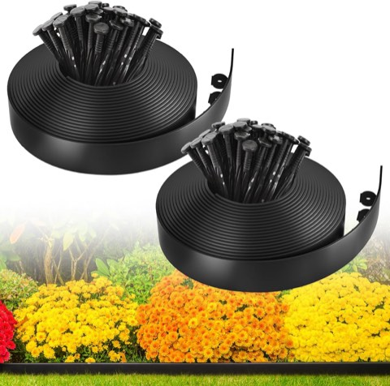
MIXC Plastic Landscape Garden Edging Border, 100 ft, 2 Inch Tall, with 150 Stakes
Shop on Amazon1. Mixed Material
Combining two edging materials, stone with a living border, or brick transitioning into metal, breaks the usual rules in a way that can look genuinely intentional when done with restraint.
This works best when one material clearly leads and the second plays a supporting role, rather than competing for equal attention.
Worth planning carefully, since an uncoordinated mix reads as accidental rather than designed.
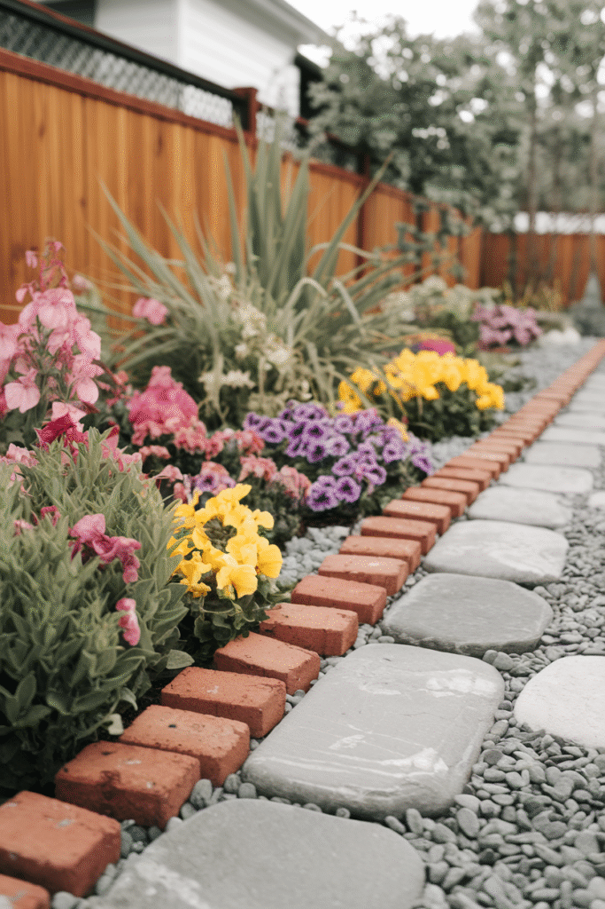

2. Living Edging
A dense, low-growing plant, boxwood, lavender, creeping thyme, can define a bed's border without any hard material at all.
This option requires ongoing maintenance that a hard material doesn't, but it adds genuine texture, color, and even fragrance that no hardscape material can match.
A good fit for a garden-forward yard where the border itself is meant to be part of the planting, not separate from it.
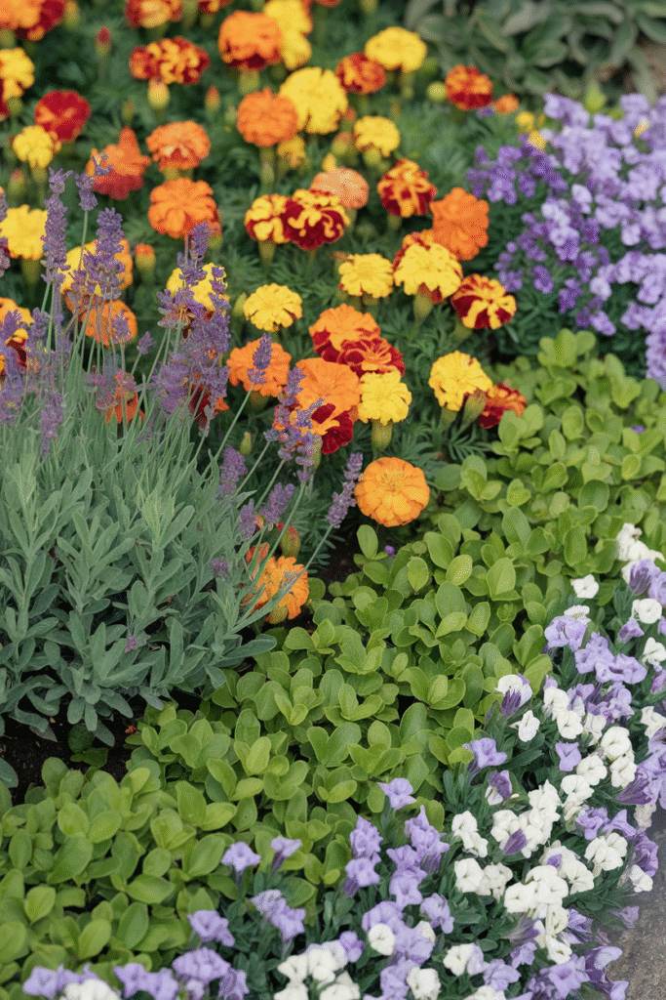
3. Concrete
Poured or pre-cast concrete edging creates a clean, durable line that holds its shape better than almost any other material over time.
This works especially well for a bed with a defined geometric shape, where a crisp, consistent edge matters more than an organic feel.
More stylish than its reputation suggests, especially in a smooth, pale finish against darker mulch or soil.
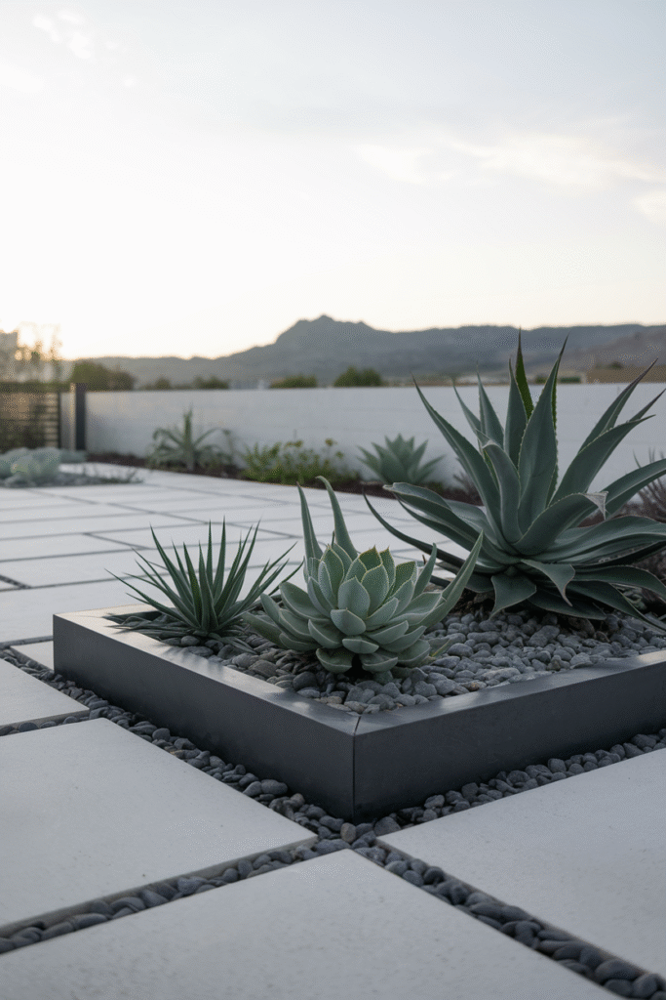
4. Wood
Timber edging brings genuine warmth and a natural material story that stone and metal can't replicate.
This is also one of the most customizable options, since it can be cut, stained, or shaped to fit almost any bed layout.
Untreated wood eventually breaks down, so a rot-resistant species or a sealant matters for anyone wanting this edging to last.
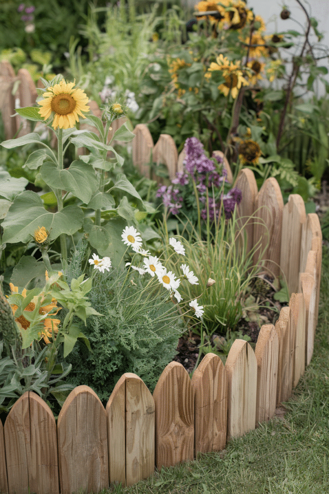
5. Brick
Brick laid flat or on edge brings a classic, cottage-garden charm that pairs naturally with an older home or a more traditional planting style.
This material also handles curves reasonably well when laid as individual units rather than a single rigid strip.
A material that only improves with a bit of age and weathering, unlike most other edging options.
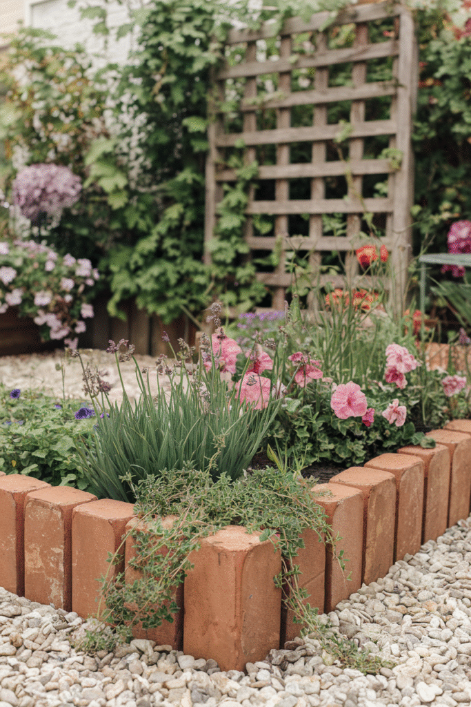
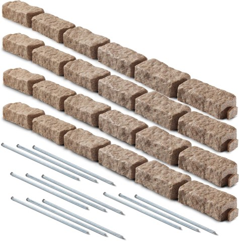
Beuta Polyrock Brick-Look Landscape Edging for Flower Beds and Pathways
Shop on Amazon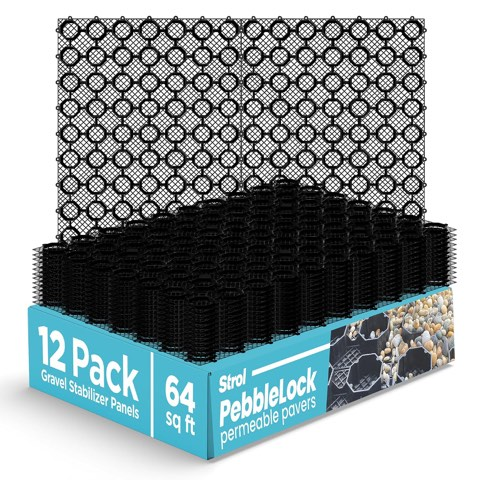
PebbleLock Interlocking Permeable Paver Grid, Heavy Duty, 64 sq ft, 12 Pack
Shop on Amazon6. Metal
A thin metal strip creates a clean, minimal line that disappears into the landscape rather than competing with the plants for attention.
This is a surprisingly easy material to install, since it's flexible enough to curve around organic bed shapes without any cutting.
A modern or minimalist garden benefits from this material more than a traditional cottage-style one would.
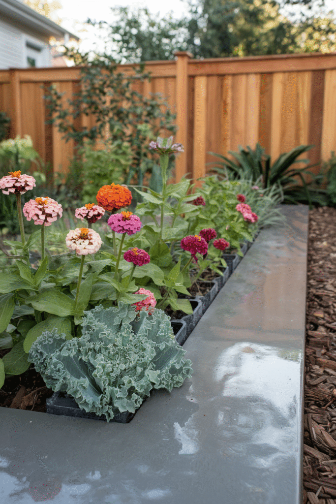
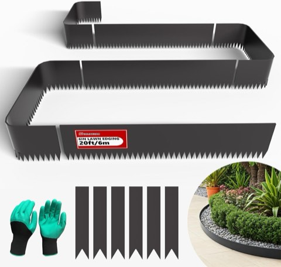
Galvanized Steel Landscape Edging, 20 ft, 6 Pack, 40 x 6 Inch, with Stakes
Shop on Amazon7. Natural Stone
Irregular stones laid along a bed's border bring a rugged, timeless look that works in almost any garden style.
This material holds up for decades with essentially no maintenance, since it doesn't rot, rust, or need repainting.
Installation takes more physical effort than other materials on this list, given the weight involved, but the payoff is edging that never needs replacing.
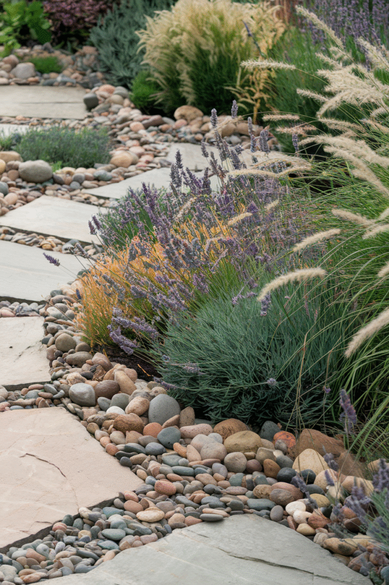
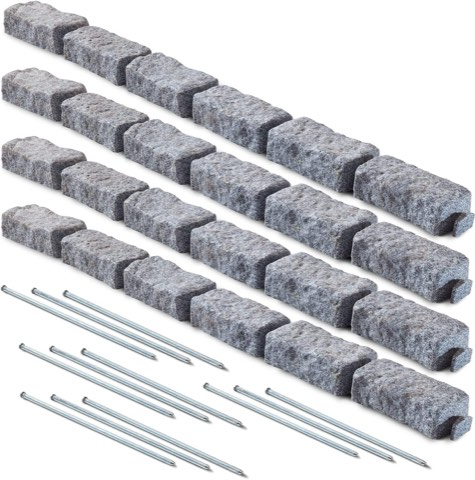
Beuta Polyrock Stone-Look Landscape Edging Bricks for Lawn and Garden Borders
Shop on Amazon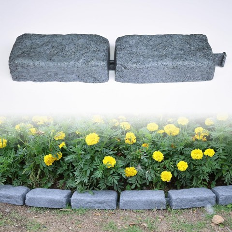
Landscape Edging Stone Kit for Lawn Edging, 12 Pack, 24 Bricks, 15.5 ft
Shop on AmazonWhat Edging Actually Does
Beyond the visual line, edging physically stops grass roots and mulch from migrating between the bed and the surrounding lawn.
This single detail is often what separates a garden that looks genuinely designed from one that just has plants in it.
Choosing the Right One
Budget, maintenance tolerance, and the garden's overall style should drive the decision more than which material simply looks best in a photo.
A material that matches the home's existing hardscaping, a brick path, a stone patio, tends to tie the whole yard together more convincingly than one chosen in isolation.
Whichever material gets chosen, a clean, consistent edge does more for a garden's finished look than almost any other single landscaping detail.